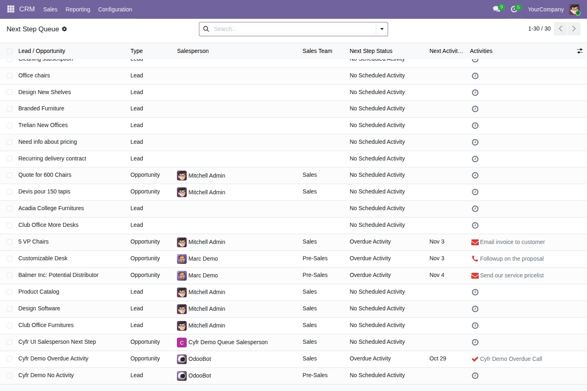

Find open leads and opportunities with no scheduled activity or an overdue activity.
Free, open-source Odoo 19 addon (LGPL-3). Requires the standard crm module.
Open CRM → Sales → Next Step Queue to review leads and their next activity status.

Tested on Odoo 19 Community. Enterprise compatibility remains unverified. This release does not include a digest, a configurable overdue threshold, or a contact-age indicator.